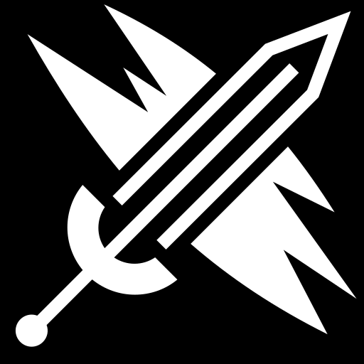
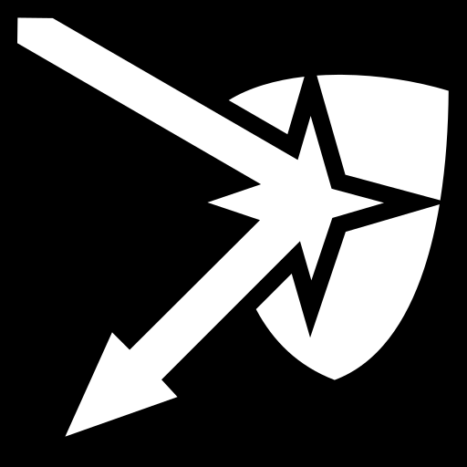
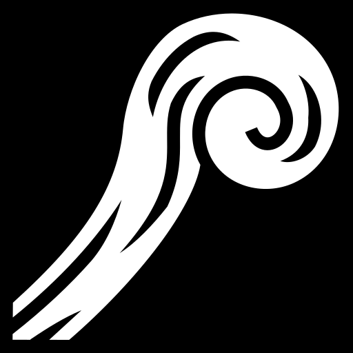

12

4

2
5
Lore
Once honored defenders of Shurima against the Void, Aatrox and his brethren would eventually become an even greater threat to Runeterra, and were defeated only by cunning mortal sorcery. But after centuries of imprisonment, Aatrox was the first to find freedom once more, corrupting and transforming those foolish enough to try and wield the magical weapon that contained his essence. Now, with stolen flesh, he walks Runeterra in a brutal approximation of his previous form, seeking an apocalyptic and long overdue vengeance.
Stats
| HP | 4 |
| MP | 14 |
| Armour | 20 |
| AD | 160 |
 Q: FIRST CAST: Aatrox's first strike affects a 625 × 180-unit rectangular area in the target direction, with Aatrox centered on the back line and the Sweetspot at the farthest edge.
Q: FIRST CAST: Aatrox's first strike affects a 625 × 180-unit rectangular area in the target direction, with Aatrox centered on the back line and the Sweetspot at the farthest edge.
 W: ACTIVE: Aatrox smashes the ground in the target direction, creating a chain that stops on the first enemy hit, dealing physical damage, doubled against Minion icon.png minions, and Slow icon.png slowing them by 25% for 1.5 seconds
E: PASSIVE: Aatrox heals for a percentage of the non-Blaze.png persistent post-mitigation damage he deals against enemy champions.
ACTIVE: Aatrox dashes in the target direction.
W: ACTIVE: Aatrox smashes the ground in the target direction, creating a chain that stops on the first enemy hit, dealing physical damage, doubled against Minion icon.png minions, and Slow icon.png slowing them by 25% for 1.5 seconds
E: PASSIVE: Aatrox heals for a percentage of the non-Blaze.png persistent post-mitigation damage he deals against enemy champions.
ACTIVE: Aatrox dashes in the target direction.
 R: ACTIVE: Aatrox unleashes his true demonic form, causing all nearby enemy Minion icon.png minions and Monster icon.png monsters to Flee icon.png flee from him for 3 seconds, during which they are rapidly Slow icon.png slowed by up to 99% over the duration. For the next 10 seconds, Aatrox gains Ghost.png ghosting and Movement speed icon.png bonus movement speed, decaying by 10% of the current bonus every 0.25 seconds.
R: ACTIVE: Aatrox unleashes his true demonic form, causing all nearby enemy Minion icon.png minions and Monster icon.png monsters to Flee icon.png flee from him for 3 seconds, during which they are rapidly Slow icon.png slowed by up to 99% over the duration. For the next 10 seconds, Aatrox gains Ghost.png ghosting and Movement speed icon.png bonus movement speed, decaying by 10% of the current bonus every 0.25 seconds.